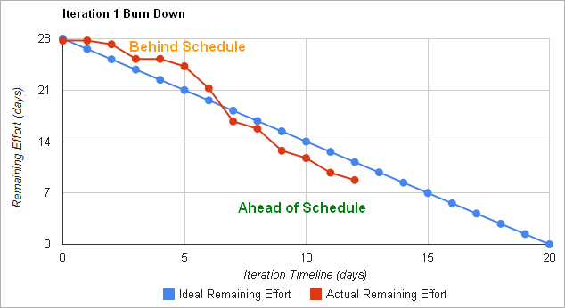
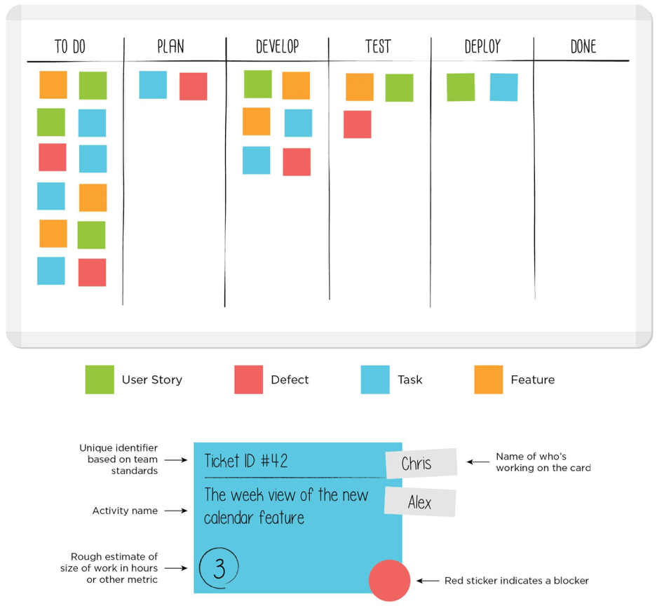

Com que el desenvolupament de productes de programari no és una tasca senzilla, hi ha diverses metodologies que podem seguir per a aquest desenvolupament. Una metodologia és un conjunt de tècniques i mètodes que ens ajuden a afrontar cada etapa d'un cicle de vida. D'aquesta manera, podem:
Una metodologia es compon de:
Algunes metodologies són tradicionals i es concentren a controlar cada part del procés en tot moment. Estableixen les activitats a realitzar, els lliurables que s'han de produir en cada etapa, i les eines i estàndards que s'empraran. Per a alguns projectes, aquestes metodologies poden ser massa rígides i difícils d'adaptar.
La majoria d'aquestes metodologies es basen en alguns dels models de cicle de vida esmentats anteriorment, especialment els models iteratius i en espiral. Ambdós apliquen diverses iteracions sobre les etapes del desenvolupament del programari, generant alguns productes intermedis durant el procés.
Vegem algunes de les metodologies tradicionals més populars.
El Procés Unificat Racional (RUP) és un marc iteratiu creat per Rational Software Corporation, que forma part de la companyia IBM. Però, en lloc de ser un marc rígid com s'esperaria d'una metodologia tradicional, RUP no és inflexible. Es pot adaptar a diferents projectes, triant els elements més adequats per a cadascun.
La metodologia RUP es basa en el model de cicle de vida en espiral i tracta de millorar els inconvenients del model en cascada. A més, també intenta incloure el paradigma orientat a objectes mitjançant UML (Unified Modeling Language). En parlarem més endavant.
Mòduls
RUP està estructurat en alguns elements anomenats mòduls. Aquests mòduls són:
Aquests tres mòduls defineixen qui fa la feina (rol), què fa (producte de treball) i com ho fa (tasca).
Etapes
Segons la metodologia RUP, el cicle de vida d'un producte consta de quatre etapes:
Podem pensar que aquesta metodologia és molt semblant al model en cascada, però una de les fortaleses de RUP rau en les iteracions que es poden realitzar en qualsevol etapa. A més, cada etapa té un objectiu final a aconseguir.
Exercici 1:
Busca en Internet tots els possibles diagrames que podem utilitzar en UML (Unified Modeling Language), que és una part essencial de la metodologia RUP. Aquests diagrames poden ser de dos tipus: diagrames estructurals o diagrames de comportament. Identifica almenys tres diagrames de cada tipus.
El Microsoft Solutions Framework (MSF) és una metodologia personalitzable que aplica un enfocament tradicional per a desenvolupar un producte de programari. Com pots imaginar, va ser creada per Microsoft, i es pot aplicar no sols al desenvolupament de programari, sinó també a altres àmbits informàtics, com la planificació de xarxes o infraestructures.
Etapes
Com hem vist amb RUP, MSF també es basa en el model en espiral. El procés consisteix en cinc etapes iteratives. Al final de cada una, hem d'haver aconseguit un objectiu determinat i completat un conjunt de lliurables.
Els principals avantatges d'aquesta metodologia són la seua adaptabilitat a diferents projectes (com RUP), i la col·laboració amb el client. Els principals desavantatges són l'excessiva documentació que s'ha de crear i la dependència dels productes de Microsoft.
Atés que desenvolupar productes de programari no és una tasca fàcil, existeixen diferents metodologies que podem seguir per a aquest desenvolupament. Una metodologia és un conjunt de tècniques i mètodes que ens ajuden a afrontar cada fase d'un cicle de vida. Així, podem:
Les metodologies tradicionals són molt útils per a projectes grans (en termes de temps i pressupost), però presenten alguns inconvenients per a projectes no tan grans, amb terminis curts o amb requisits incerts. Per exemple, produeixen massa documentació i estan massa planificades.
Per a afrontar aquests altres projectes, molts equips han provat metodologies àgils, que són especialment adequades per a projectes menuts, a desenvolupar en poc de temps, amb equips de menys de 10 persones. Amb aquestes metodologies, es promou el treball en equip, la responsabilitat pròpia, les necessitats del client i els objectius de la seua empresa. La comunicació cara a cara entre els membres de l'equip, i amb el client, és molt regular. Així, els membres de l'equip comparteixen els seus avanços i problemes, i tenen un feedback ràpid del client.
Per a complir el seu objectiu, el desenvolupament àgil fa increments menuts en el projecte, amb una mínima planificació. Cada increment realitza una iteració completa sobre les fases del programari (requisits, disseny, implementació, proves...) en un període curt de temps (normalment 1-4 setmanes), la qual cosa es coneix com a "timebox". D'aquesta manera, minimitzem el risc general i el projecte pot adaptar-se a molts canvis al llarg del seu desenvolupament. La documentació només es genera quan realment es necessita, i l'objectiu és aconseguir un prototip funcional després de cada iteració, encara que amb funcionalitats molt reduïdes.
El manifest àgil és una especificació creada en 2001 que recull els principis principals que una metodologia ha de tindre per tal que l'equip puga construir un projecte de programari ràpidament i afrontar els canvis que puga tindre en el futur.
Alguns dels principis més importants són:
A més dels principis recollits en el manifest àgil, algunes metodologies àgils utilitzen certes pràctiques. Vegem-ne algunes.
Programació per parelles (PP)
La programació per parelles és una tècnica que ofereix molts avantatges. Dos programadors treballen junts en el mateix ordinador. Un d'ells està escrivint codi (conductor) i l'altre està revisant el que s'està escrivint (observador). Tots dos intercanvien els seus rols amb freqüència (cada 30 minuts, per exemple). L'observador és l'encarregat de guiar el treball del conductor i proporcionar idees per a resoldre problemes futurs.
Els principals avantatges d'aquesta tècnica són:
Tanmateix, també té alguns inconvenients:
Aquesta és una tècnica que utilitza iteracions curtes basades en casos de prova escrits prèviament. Així, cada iteració produeix el codi necessari per a passar aquestes proves, i una vegada passades, integrem aquest codi amb l'anterior i l'optimitzem. El procés és el següent:
És important disposar d'un conjunt de proves unitàries que puguen llançar-se automàticament, de manera que es puguen afegir més proves de tant en tant i es puguen tornar a llançar en qualsevol moment. Més endavant en aquest mòdul, veurem algunes tècniques per a definir casos de prova i conjunts de proves.
L'objectiu principal és definir les proves que el sistema ha de superar abans d'escriure el codi corresponent, de manera que ens assegurem que l'aplicació es pot comprovar, i definim proves per a cada característica. D'aquesta manera, evitem escriure codi innecessari (això és, codi que no està lligat a cap prova).
Scrum és una metodologia àgil que es pot utilitzar en projectes complexos. Utilitza processos iteratius i incrementals, i es pot aplicar tant a productes de programari com a altres àmbits. El seu nom prové de la “melé” que fan els jugadors de rugbi.
Rols
Els rols principals en Scrum són:
Procés
Per començar, l’equip de treball ha de recopilar els requisits d'usuari del client (tant de directius com d'empleats que aniran a utilitzar l'aplicació). Les funcionalitats de l’aplicació es recopilen mitjançant les user stories, que bàsicament són un conjunt de targetes de paper on el client descriu les característiques del sistema. Cada història ha de ser comprensible i concreta, perquè l'equip puga implementar-la en poques setmanes. Es demana a cada usuari de l'empresa client que escriga què espera de l'aplicació. El conjunt complet d’històries es recull en una col·lecció anomenada backlog. D’aquest backlog, algunes històries acabaran formant part de l’aplicació (la resta seran descartades).
A partir d’ací, comencem el procés de desenvolupament, basat en iteracions anomenades sprints. Cada iteració dura de 2 a 4 setmanes, i produeix un prototip o una versió operativa del producte. En aquest increment, s’afegeixen a l’aplicació alguns requisits extrets del backlog. El conjunt de requisits que s’han d’afegir en cada iteració es decideix en una reunió de planificació, on el ProductOwner tria alguns elements per a afegir, i l’equip decideix quins es poden incloure en la següent iteració. Durant la iteració, el backlog queda congelat, és a dir, no es pot canviar cap requisit anterior fins que comence la següent iteració.
A més de la reunió a l’inici de la iteració, també hi ha reunions diàries en Scrum, on es discuteix l’estat del projecte, què s'ha fet i què es farà pròximament. També hi ha una reunió final al final de la iteració per a revisar la versió o prototip obtingut.
Estimació de temps
Cada user story en el backlog té assignat un temps, normalment en hores, dies o fins i tot setmanes. Per tant, el temps total estimat d’un sprint és la suma de totes les user stories triades per a aquest sprint.
Per a determinar si el temps total estimat difereix molt del temps real, podem utilitzar algunes eines addicionals com els burndown charts, que ens ajuden gràficament a determinar quines mesures podem prendre per a reduir aquesta diferència.

Exercici 1:
En aquest vídeo tens un resum de la metodologia Scrum. Després de vore'l, intenta respondre a aquestes preguntes:
Kanban és una altra metodologia àgil, que és molt fàcil d'aplicar. El seu nom és una combinació de dues paraules japoneses: kan (“visual”) i ban (“targeta”), així que podem deduir que el component principal d’aquesta metodologia consisteix a utilitzar targetes que representen les diferents tasques que hem de completar en el procés de desenvolupament.
Els orígens de la metodologia Kanban es remunten a més de 60 anys. A finals dels anys 1940, Toyota va començar a optimitzar els seus processos d'enginyeria, basant-se en el mateix model que utilitzen els supermercats per a optimitzar els seus estocs. Com que els nivells d'inventari haurien d'ajustar-se als patrons de consum, l'excés d'estoc es pot (i ha de) controlar. D’aquesta manera, Toyota podia alinear els seus nivells d'inventari amb el consum real de materials. Els treballadors passaven una targeta entre els equips quan un contenidor de materials s'havia buidat, indicant la quantitat exacta de material necessària. El magatzem tindria un nou contenidor de material preparat per a ser lliurat a la fàbrica, i després enviarien un nou kanban al proveïdor per a proporcionar un nou contenidor.
Aplicat als processos de desenvolupament de programari, Kanban permet als equips ajustar la quantitat de treball en procés (WIP) a la capacitat de l'equip. Això proporciona als equips opcions de planificació més flexibles, un lliurament més ràpid i un enfocament més clar.
Procés:
El terme general per a referir-se a la metodologia Kanban és flow, ja que el treball flueix contínuament pel sistema en lloc d'estar organitzat en timeboxes, com fa Scrum amb els seus sprints.
Kanban utilitza mecanismes visuals, com ara els Kanban boards, perquè els membres de l’equip puguen veure l'estat de cada part del treball en qualsevol moment. Aquests taulers poden ser tant físics com virtuals.

La funció principal del tauler Kanban és garantir que el treball de l’equip estiga visualitzat i que tots els bloquejos i dependències es detecten immediatament. El tauler més bàsic té tres seccions (Per fer, En procés i Fet), però podem afegir tantes columnes i estats com necessitem per al nostre cas particular.
Qualsevol secció o columna d'un tauler Kanban pot omplir-se amb targetes Kanban. Aquestes targetes reflecteixen informació crítica sobre una tasca de treball concreta, proporcionant a tot l’equip informació sobre qui és el responsable d'aquesta tasca, una breu descripció del treball a fer i una estimació de quant de temps durarà.
Principis:
Alguns dels principals principis de la metodologia Kanban són:
Kanban vs Scrum
Kanban té algunes similituds amb la metodologia Scrum, ja que ambdues són metodologies àgils: totes dues requereixen equips col·laboratius i autogestionats, i totes dues se centren en l'alliberament freqüent de programari. No obstant això, hi ha algunes diferències importants entre elles:
| Kanban | Scrum |
|---|---|
| No hi ha rols prescrits | ScrumMaster, ProductOwner… |
| Lliuraments continus | Sprints delimitats en temps |
| Es poden fer canvis en qualsevol moment | No es permeten canvis durant el sprint |
Ambdues metodologies es poden aplicar alhora. Scrum és més adequat per a donar retroalimentació a l’equip i en la planificació a curt termini, mentre que Kanban es pot utilitzar per al treball diari o en entorns amb un alt grau de variabilitat en les prioritats.
Exercici 2:
En aquest vídeo tens un exemple de la metodologia Kanban. Intenta respondre a aquestes preguntes després de vore’l: